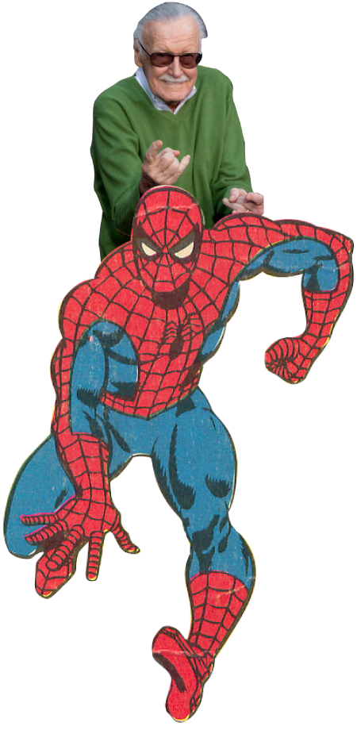
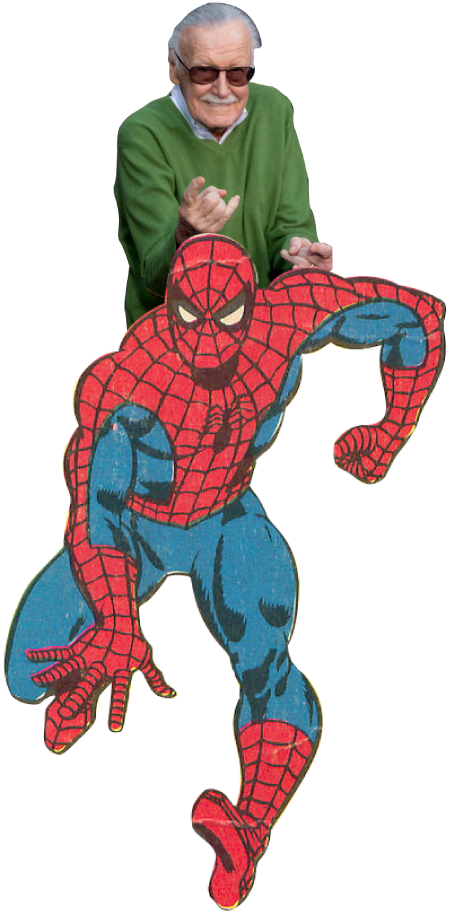

Sebenarnya, cukup lucu sih melihat seberapa besarnya sekarang. Awalnya, doi malu banget jadi komikus, sampai-sampai pake nama samaran “Stan Lee”. Toh, akhirnya ia sadar. Hanya dirinya yang bisa bikin komik dan cerita superhero naik kelas.
Stan Lee berhasil bertransformasi dari seorang komikus, menjadi sosok yang kalo disebut sebagai seorang pembuat komik malah jadi “dosa”.
Soalnya, sosok satu ini memang bukan cuma bisa bikin karakter baru atau garap cerita seru. Pemilik nama asli Stanley Martin Lieber ini memang lebih besar dari itu, bahkan sama gedenya dengan Marvel sendiri.
Adalah sebuah anugerah kalo Marvel punya Stan Lee. Tahun 60-an lalu, nggak ada yang kepikiran buat memposisikan komik sebagai sebuah budaya buat pembacanya. Stan Lee sukses bikin pembaca memiliki dunia baru lewat “Bullpen Bulletins.” Di buletin tersebut, ia membuat hubungan antar pembuat komik dengan pembaca tak ada jarak, dengan frase-frase legendaris yang menginspirasi seperti “Face front, true believers” dan tentunya “Excelsior!”
Keunikan lain Stan Lee adalah jiwa selebnya. Pada masa kejayaan komik, dirinya bisa disebut sebagai “marketing berjalan” buat Marvel. Ia mengubah dirinya sendiri menjadi sebuah persona yang nggak bisa ditandingi. Dari rajin mampir ke Comic Convention, hingga jadi cameo di film-film Marvel, sosok Stan Lee makin dekat dengan penggemar dan jadi figur yang dicintai.
“Kalo generasi remaja dan pembaca komik memilihnya buat jadi pemimpin, Lee bakal dengan bangga menerima jubahnya dan menjadi raja bagi mereka,” kata pemerhati sejarah, Bob Batchelor, memuji kepribadian Stan Lee dalam buku Stan Lee: The Man Behind Marvel.
“Merancang imej dengan berbagai kuliah yang membuatnya keliling negeri, dan tentunya lewat karya-karyanya di Marvel, Lee menciptakan persona lebih besar dari penerbit dan atasannya,” lanjutnya.
Toh, Stan Lee memang layak “ngartis.” Jasanya di dunia komik sulit ditandingi, baik dari kuantitas maupun kualitas. Tercatat, dirinya bikin lebih dari 1.000 karakter Marvel (beberapa ia buat berkolaborasi dengan komikus lain, RED) dan juga menulis ribuan komik.
Gaya Stan Lee membuat cerita patut dipuji. Doi nggak bikin cerita superhero itu cuma sekedar bak bik buk berantem. Ia ngebangun sisi humanis dari superhero dengan cara yang menyentuh. Contohnya seperti Spider-Man yang menggunakan topeng menutupi seluruh wajah, agar semua anak di dunia bisa percaya kalo mereka dapat menjadi pahlawan super, apapun warna kulit dan latar belakang kehidupan mereka. Atau membuat karakter Black Panther di zaman Amerika Serikat menolak kesetaraan ras, dan tetap relevan ketika dirilis sebagai film pada 2018.
Ucapan Stan Lee yang kamu baca di atas sepertinya udah jadi kenyataan. Nggak heran juga sih kalo banyak yang terinspirasi oleh sosok yang wafat pada 12 November 2018 lalu ini. Bukan hanya penggemar superhero dan komik saja, tapi juga bidang-bidang lain. Dalam #GoDeeper kali ini, Hai mau ngajak lo ngasih tribut untuk beliau.
Simak!


 
